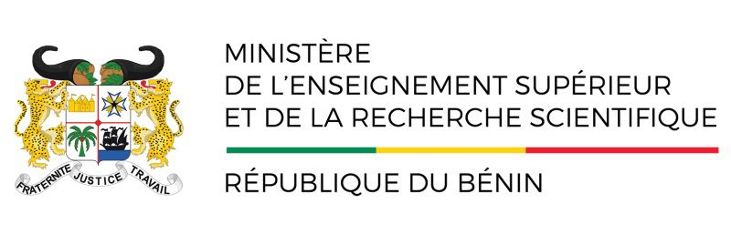

Le soleil déclinait lentement sur la ville, projetant de longues ombres sur les façades décrépies du vieux quartier. Florence, assise au café habituel, observait les passants avec une certaine mélancolie, sentant l'automne approcher. Le bruit du trafic se mêlait aux conversations lointaines, créant une symphonie étouffante et familière. Elle revoyait cette scène étrange, une sorte de répétition générale, où tout semblait déconnecté, hors du temps. David, de son côté, s'assoupissait presque, la tête appuyée contre la vitre froide du taxi. Une portière claqua, interrompant le silence, et le chauffeur entama une brève discussion avec un homme en uniforme. C'était le moment qu'elle redoutait, l'arrivée imminente de nouvelles qui changeraient leur routine tranquille. Florence soupira, ajusta son écharpe, et décida qu'il était temps de rentrer. Le mystère de cette journée allait sûrement être élucidé demain, ou peut-être jamais. Pourtant, une étrange excitation l'envahissait, le sentiment qu'une page se tournait pour ne plus jamais s'ouvrir de nouveau à leur face.